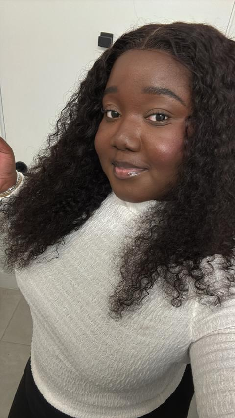
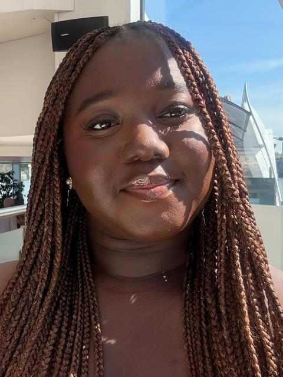

Some of my work
One talking-head video, before and after
Same footage, with and without the edit. Play each phone and compare.
Swipe to compare →
Thumbnails
Thumbnails for tutorials, get-to-know-me videos and vlogs: a clear face, a bold title and colours that suit the video.
What changes when you hand off your editing
Editing stops eating your week
You film, I edit. Your first draft arrives in 3–5 days, with a 2-day express option when you’re up against a deadline.
Videos people stay for
I cut the slow parts and keep the moments that land, so the video holds attention from the first second to the last.
Footage that gets posted
The clips sitting in your camera roll become finished videos you can upload, instead of another project you never get round to.
One person on your project
You deal with me directly from first message to final file. No handoffs.
Best for creators and small business owners who have the footage but not the time to edit it.
Book a call ↗Meet the editor
Hilary Osei-Okrah
The editor behind every cut.
I see potential in the footage most people leave unfinished.
For me, editing is storytelling, rhythm, and visual communication. It’s knowing what to emphasise, what to remove, and when to let a moment speak for itself.
I started Refyne to help creators and brands turn what they already have into content that connects.
Less noise. More story. Better content.

From your camera roll to your next post.
Five steps, no surprises.
- 01
You send
Your footage, brief, references, or rough idea.
- 02
We align
A 10–20 minute consultation to understand your vision.
- 03
I create
Your first draft arrives within 3–5 days.
- 04
We refine
One revision is included.
- 05
You post
Your content, ready for its next chapter.
Got footage? Let’s do something with it.
You create the moment. I’ll refine the story.
Book a 10–20 minute call, tell me what you’re making, and we’ll work out the edit together.
Book a call ↗
